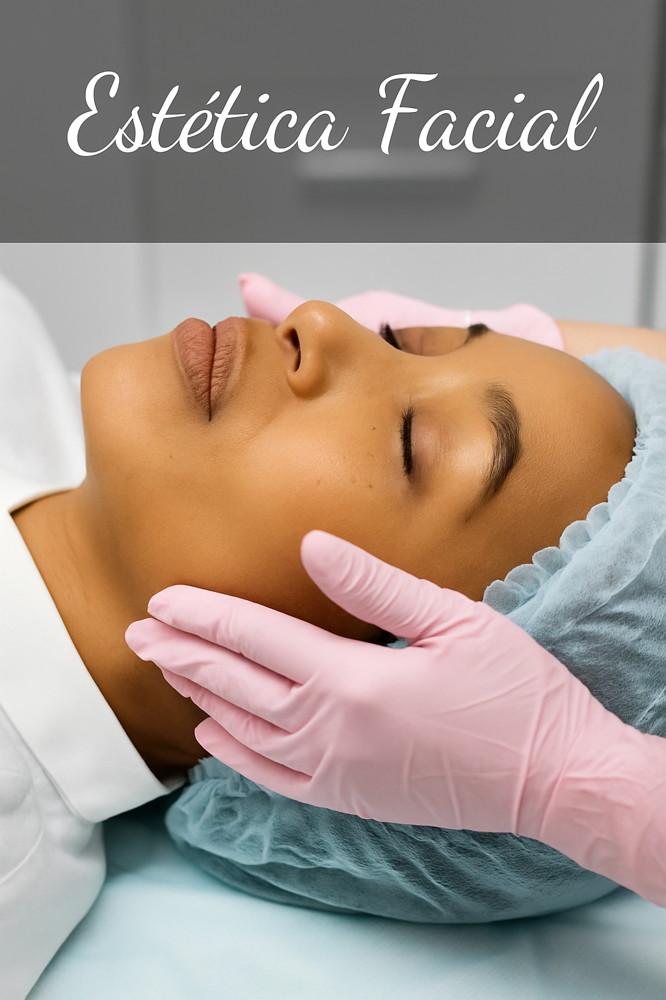
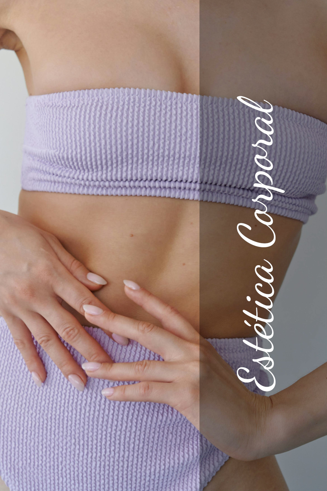

Drenagem Linfática
Auxiliar na eliminação de líquidos e toxinas do corpo, reduzir inchaços, melhorar a circulação e fortalecer o sistema imunológico.
Tempo de duração:
m
Beneficios:
- Reduz inchaços: Elimina líquidos acumulados e alivia a retenção.
- Melhora a circulação: Favorece o fluxo sanguíneo e linfático.
- Remove toxinas: Auxilia na desintoxicação do corpo.
- Acelera a recuperação: Ajuda na cicatrização e no pós-cirúrgico.
Limpeza de Pele
Procedimento que visa higienizar profundamente a cútis, removendo impurezas, cravos (comedões) e células mortas.
Tempo de duração:
m
Beneficios:
- Remove impurezas: Desobstrui poros e previne cravos e espinhas.
- Renova a pele: Esfolia e deixa a pele mais radiante e uniforme.
- Prepara para tratamentos: Melhora a absorção dos ativos.
- Melhora a textura: Deixa a pele mais saudável e hidratada.
Massagem Anti-Estresse
A massagem anti-estresse é uma técnica suave e lenta que atua em áreas como pescoço, ombros, costas e pernas, ajudando a aliviar a tensão e o estresse acumulados.
Tempo de duração:
m
Beneficios:
- Reduz estresse e ansiedade: Diminui o cortisol e aumenta serotonina e endorfina.
- Melhora a circulação: Estimula o fluxo sanguíneo e elimina toxinas.
- Alivia dores musculares: Reduz tensões e melhora a mobilidade.
- Melhora o sono: Favorece um descanso profundo e reparador.
Ventosaterapia
Ventosaterapia é um tipo de tratamento alternativo no qual são usadas ventosas que criam um vácuo na pele, para melhorar a circulação sanguínea em um local do corpo.
Tempo de duração:
m
Beneficios:
- Aumento da circulação sanguínea: Melhora o fluxo local e nutrição dos tecidos.
- Eliminação de contraturas musculares: Reduz pontos de tensão e pontos gatilho.
- Fortalece os vasos sanguíneos: Contribui para a saúde vascular.
- Aumento do líquido sinovial: Estimula a produção dentro das articulações.
Sobre:
A Sol e Bem-Estar é uma empresa de pequeno porte especializada em levar autoestima e bem-estar a mulheres de todas as diversidades. Atuando como prestadora de serviços estéticos, atendendo na Zona Norte de São Paulo — oferecendo praticidade, cuidado e qualidade em cada atendimento.